Inception v4 - 2016
- The last episode of Inception series.
- Resnet을 만난 Inception, Inceptionn v4 🏄 Review!
Inception. 그 슬픈 이야기..😢
2014년. 야심차게 등장한 Inception v1(GoogleNet)이 ImageNet에서 1위를 차지하고도, 2위에 그친 VGG net이 훨씬 더 단순한 구조라는 이유로 인기를 더 받았었죠.
그래서, 2015년에는 VGG에서 취할 것(Conv Factorization)을 취하여 Inception v2, v3를 만들었지만, 또 ResNet이라는 녀석이 딥러닝 역사의 획을 그어버리는 활약을 하는 바람에 비교적 주목을 받지 못하게 됩니다. 😢
그래서 개인적인 생각으로는, 이 논문은 단순히 본인들의 Inception이 VGG와, ResNet 때문에 단독으로 주목받지 못해서 자존심이 상했고. 그래서, 그럼에도 Inception이 최고성능을 낸다는 것을 어떻게든 어필하려고 쓴. 딱히 큰 발전이랄 것이 없는 논문이라 생각이 들지만, Inception 시리즈에 손을 댄 죄(?)로 끝까지 리뷰를 해보기로 했습니다..😏
저자는 그래왔듯이 Christian Szegedy입니다.
1. Introduction
- 그렇게 ResNet을 의식하고 2016년 2월 나온 이 논문에서는 총 3가지 모델을 Review합니다.
Inception v4: ResNet을 적용한 것이 아닌, Inception v3보다 좀 더 깊고 넓은 모델.Inception-ResNet-v1: Inception v3스러운 모델에 ResNet을 적용한 모델.Inception-ResNet-v2: Inception v4스러운 모델에 ResNet을 적용한 모델.
2. Related Work
- 이 부분에서, 저자는 ‘아주 깊은 CNN 모델을 학습하기 위해서는 Residual connection이 필수적이다’라고 주장하는 ResNet의 저자인 Kaiming He의 주장에 대해 딱히 동의하지 못하겠다고 합니다. 적어도 본인들이 실험을 마친 Image recognition 분야에서만큼은 말이죠.
- 확실히 Residual을 사용하면 학습 속도가 빨라지는 것은 인정하겠는데, 굳이 Residual을 사용하지 않아도 비슷한 계산량을 가진 깊은 CNN(Inception v4)를 학습하는데 무리없이 성공했다.고 말합니다.
3. Inception v4
- 이제, 본격적으로 모델들에 대해 알아보겠습니다. Residual과 상관이 없는 Pure Inception blocks으로 구성된 모델이 Inception v4입니다.
- Inception v4에서 input 이미지의 사이즈는 $299\times299\times3$ 입니다. 이 이미지가 들어오면 처음 만나는 친구가 바로 Stem block 입니다.
3.1. Stem
- 먼저 Image가 맨 처음 들어왔을 때, $299\times299\times3$ 이미지는 Stem Block을 거쳐, $35\times35\times384$ 사이즈가 됩니다.
- Conv Block 아래에서 종종 보이는 V는 Valid Padding을 의미합니다. V 표시가 없다면, Same padding이고 이미지 사이즈는 줄지 않습니다.
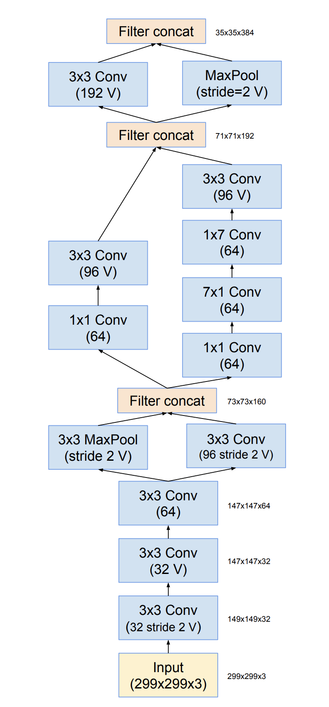
3.2. Inception-A
- Stem으로 부터 $35 \times 35 \times 384$ 이미지를 받아 처리하는 첫 번째 inception block입니다. 아래처럼 생긴 block을 연달아 4개를 이어 붙여서 사용합니다.
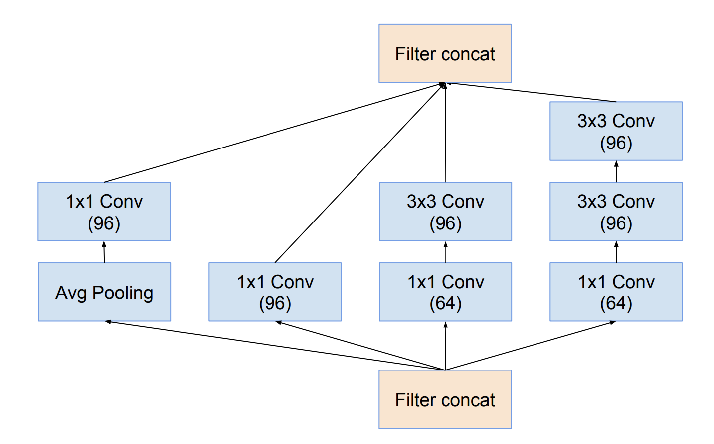
3.3. Reduction-A
- 그 다음, 이미지 사이즈를 절반으로 줄여주는 Reduction-A를 거칩니다.
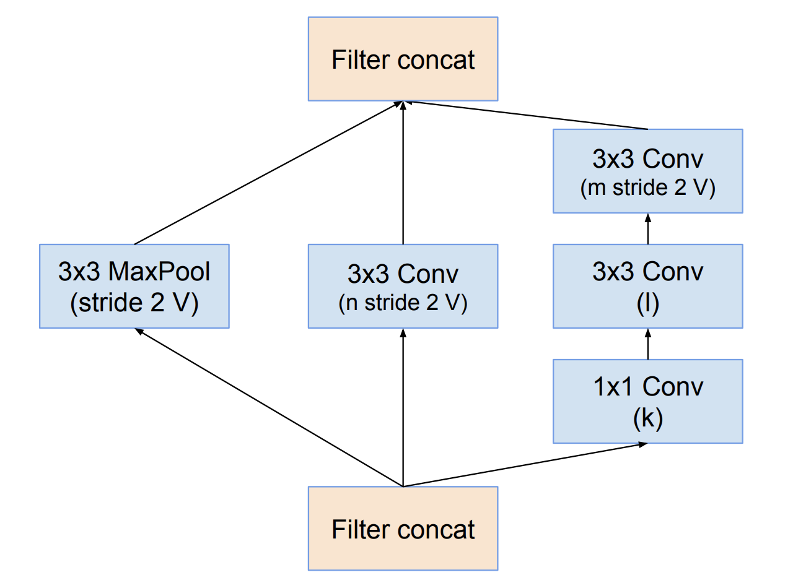
- 이 블록을 잘 보시면 filter 갯수가 아니라 $k, l, m, n$ 알파벳을 확인하실 수 있는데요, 이유인 즉슨, 이 Reduction-A block은 동일한 구조로 filter size만 다르게 이어서 소개할 Inception-ResNet-v1, v2에서도 동일하게 사용하는 블록이어서 그렇습니다.
- 아래 표에 따라서 어떤 모델에 사용되는지에 따라 filter size를 다르게 가져가게 됩니다.
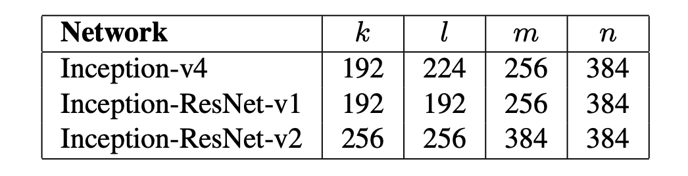
3.4. Inception-B
- 아래 보이는 Inception-B block을 7개를 거치고,
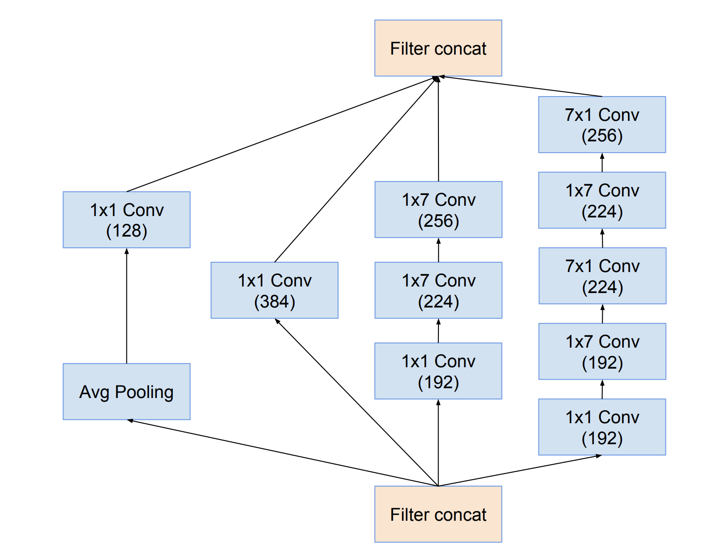
3.5. Reduction-B
- 다시 또 이미지 사이즈를 절반으로 줄여줍니다.
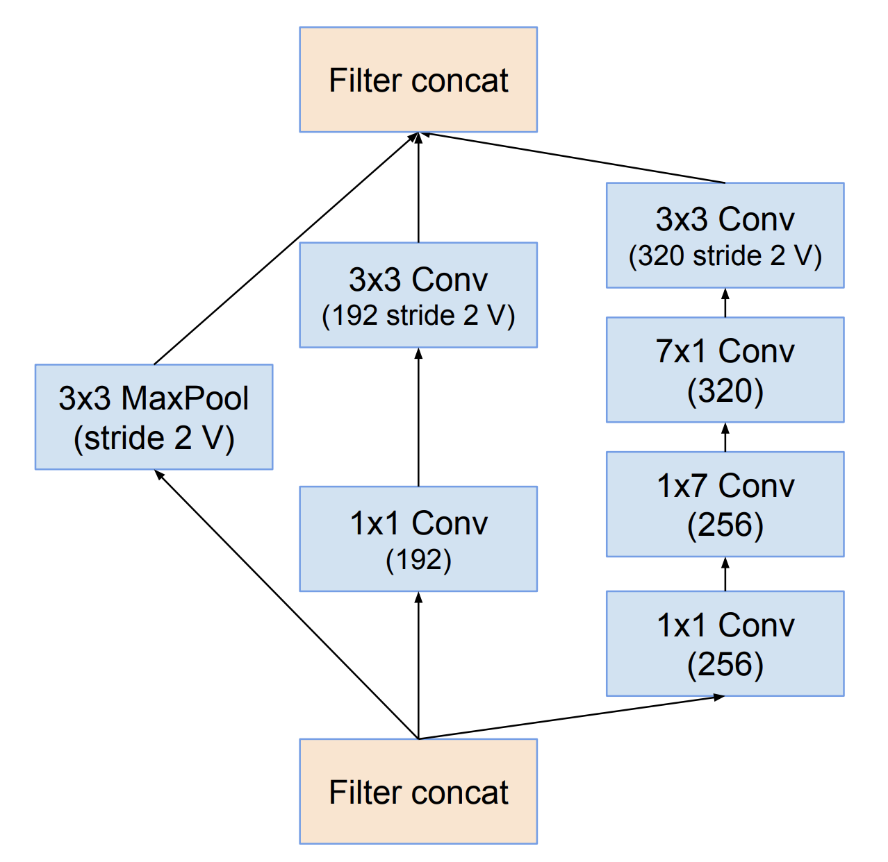
3.6. Inception-C
- 마지막으로 세 번째 inception-C block을 총 3개를 거치고, Average Pooling-Dropout-Softmax 순으로 Inception v4는 구성되어 있습니다.
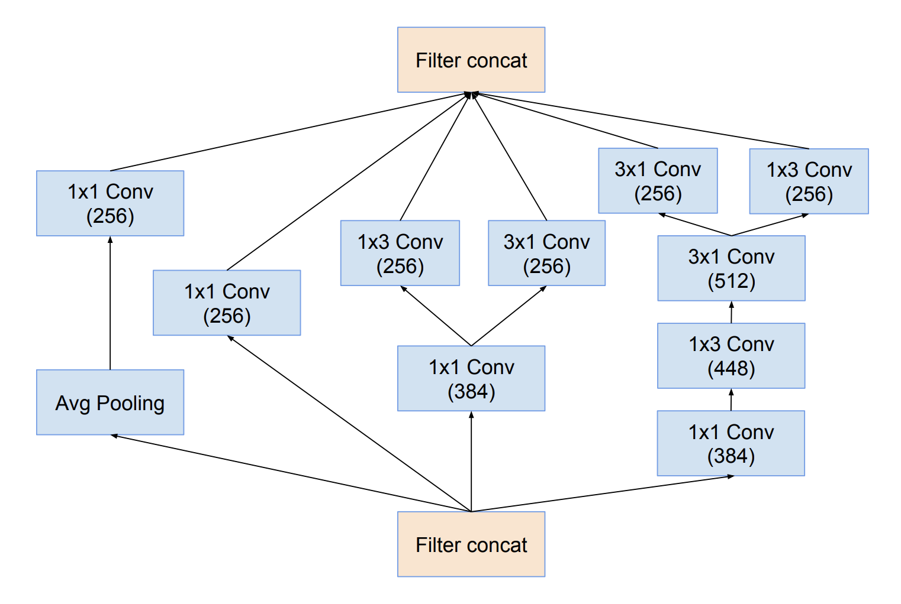
3.7. Structure 📚
이제 위에서 쭉 설명한 모든 block을 모아서 Inception v4의 구조를 도식화한 전체 구조는 아래와 같습니다.
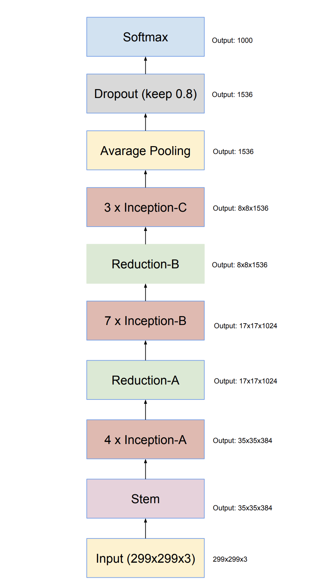
Inception v4
4. Inception-ResNet-v1 & v2
- 논문에서 소개하고 있는 Inception-ResNet-v1과 Inception-ResNet-v2를 함께 비교하면서 설명 해보겠습니다.
4.1. Stem
- 왼쪽이 v1용 Stem, 오른쪽이 v2용 Stem 입니다. v1은 태생이 Inception v3와 비슷한 계산량을 가진 모델로 만들었기 때문에 Stem도 v2보다 단순한 모양을 하고 있습니다. v2는 Inception v4와 같은 Stem을 사용하고 있습니다.
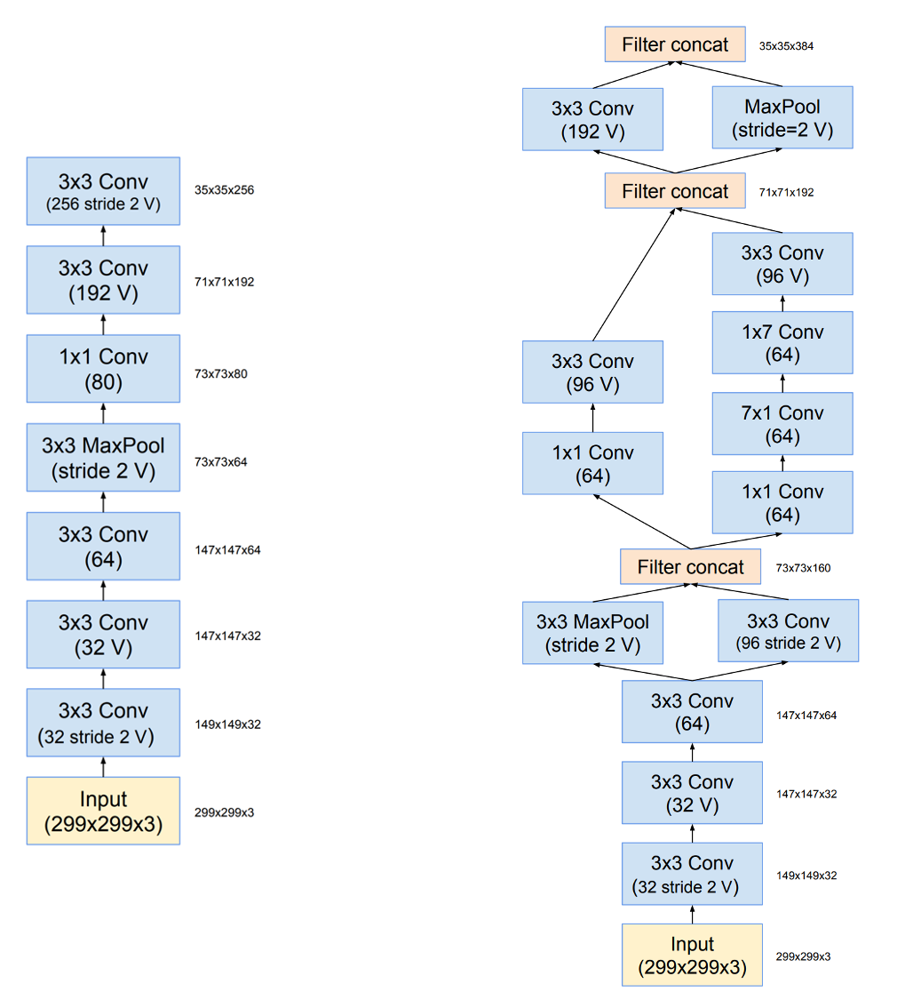
4.2. Inception-ResNet-A
- Stem을 거친 뒤 만나는 Inception-ResNet-A block입니다. 마찬가지로 v1용 블록과, v2용이 다른데요. 사실 구조는 같고, 증폭되는 filter size에만 차이가 있을 뿐입니다.
- ResNet의 구조를 차용하였고, Residual 부분을 일반 Conv layer가 아닌 Inception 블록으로 사용한 모양입니다.
- 두 모델 다 Inception-resnet-A 블록을 5개를 이어 사용합니다.
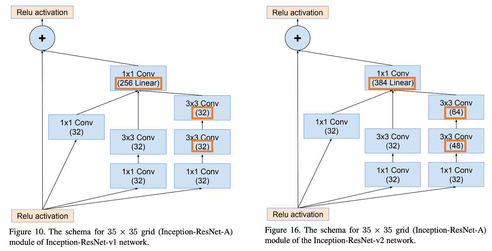
4.3. Reduction-A
- 그 다음 바통을 받아🏃, Reduction-A block으로 옵니다. Inception v4에서 설명한 Reduction-A를 table에 명시된 filter size에 맞게 사용합니다.
4.4. Inception-ResNet-B
- 다음 차례로 Inception-Resnet-B block으로 들어옵니다. 이번에도 역시나, v1과 v2의 차이는 filter size 밖에 없습니다.
- 이 Inception-ResNet-B block을 10개를 이어서 사용합니다.
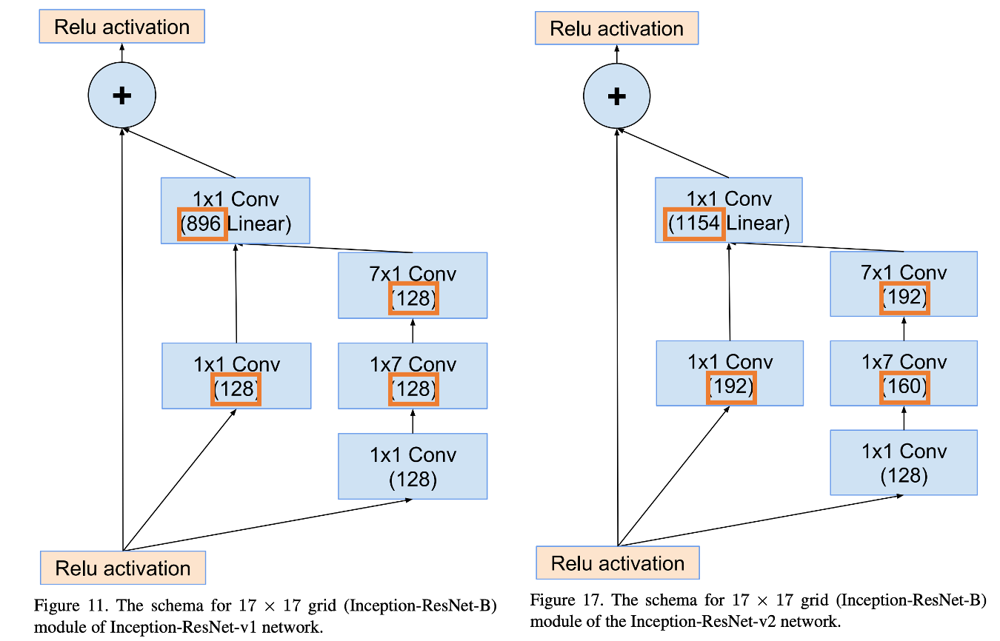
4.5. Reduction-B
- 그 다음 Feature map size를 줄여주는 Reduction-B 단계에서도 마찬가지로 v1, v2의 차이점은 filter size입니다.
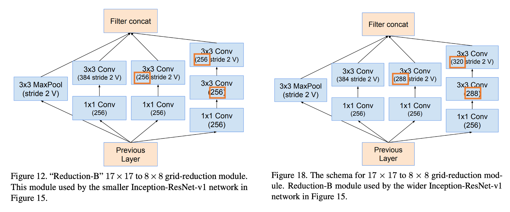
4.6. Inception-ResNet-C
- 마지막으로 아래와 같은 Inception-ResNet-C 블록을 5개 이어서 사용합니다. 그 뒤, Average Pooling-Dropout-Softmax로 마무리합니다.
- 역시나 차이점은 filter size일 뿐 구조는 같습니다.
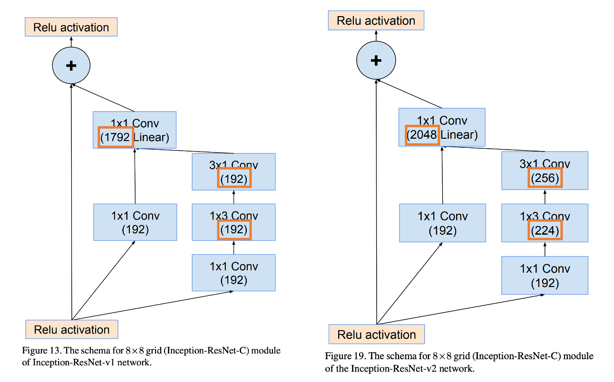
4.7. Structure 📚
- 이 때까지 소개한 Block들을 잘 조립하면 아래와 같이 Inception-ResNet-v1과 Inception-ResNet-v2의 구조를, 하나의 같은 그림으로 표현할 수 있습니다.
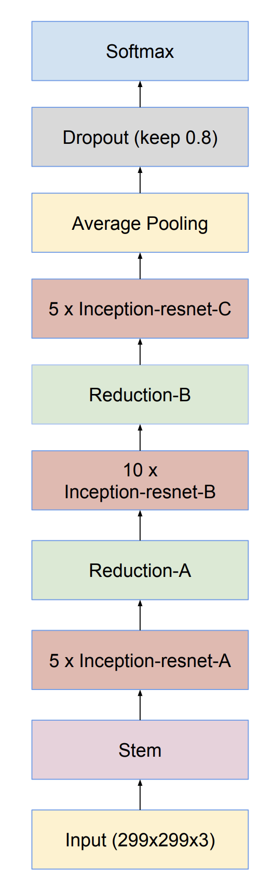
5. Scaling of the Residuals
이 논문이 그래도 기여한 바가 있다고 한다면, 저는 이 부분이 그나마 의미가 있을 수 있겠다 생각이 들었습니다. 바로 filter size가 1000을 넘어가기 시작한다면, 네트워크가 불안정한 모습을 보이다가 학습 초반에 네트워크가 말 그대로 ‘죽어버리는’ 현상이 일어나는 점을 해결한 점입니다.
아래 그림과 같이 Residual을 더하기 전에 Scaling factor로써 0.1 근처의 값을 설정하여 Residual의 값을 대폭 줄여버립니다. 이렇게 하더라도 정확도에 미치는 영향은 없을 뿐더러, 학습을 안정화 시키는 효과를 줍니다.
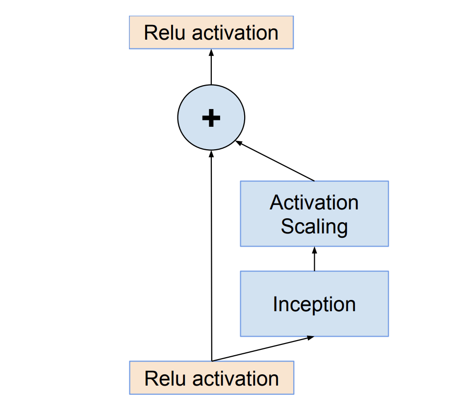
- 특히, 이 논문처럼 ResNet의 Residual로써의 Subnetwork로 inception block이 사용됐을 경우 더 유용하다고 말합니다.
6. Training Methodology
- 학습에 사용된 Hyperparameter는 아래와 같습니다. Batch size는 나오지 않네요.
Epochs:
160 ~ 200
Optimizer:
RMSProp with decay of 0.9 and $\epsilon$ = 1.0
Learning Rate:
0.045 decayedd every two epochs using an exponential rate 0f 0.94
7. Experimental Results
- Inception-v3를 포함해서 총 4가지 모델을 이미지넷 2012년 validation set으로 실험한 결과, 아래와 같이 Top-5, Top-1 Score 둘 다 비슷한 양상을 보이는 것을 확인합니다.
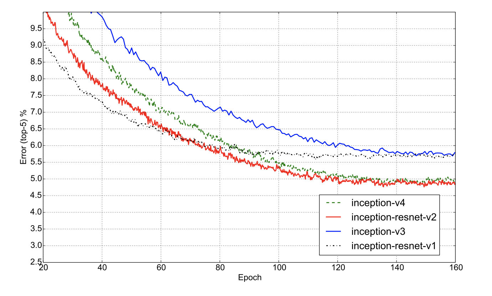
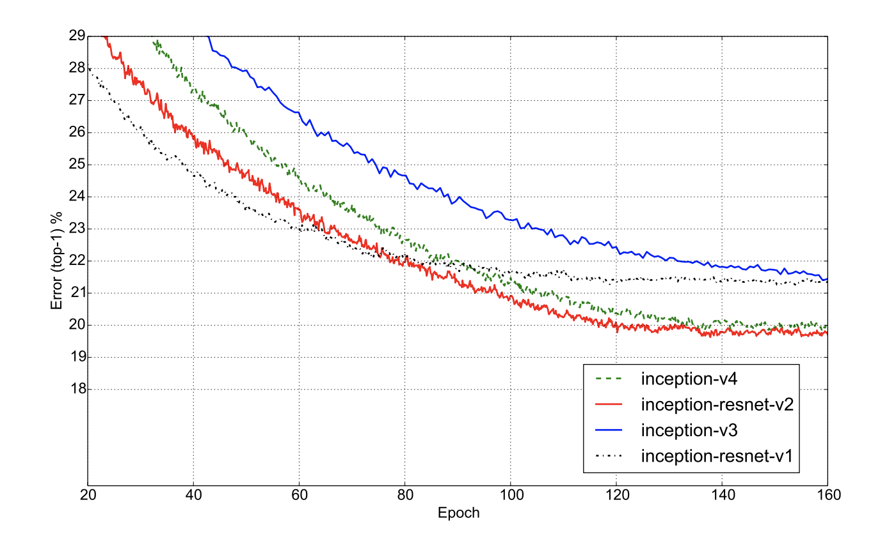
학습 수렴 속도는 ResNet을 사용한 모델들이 더 빠르지만, 결국 수렴을 마친 모델의 성능은 Pure Inception Network나, ResNet을 가미한 모델이나 큰 차이가 없다는 결론을 내립니다.
아래는 Single Model과, Ensemble Model 성능표 입니다.
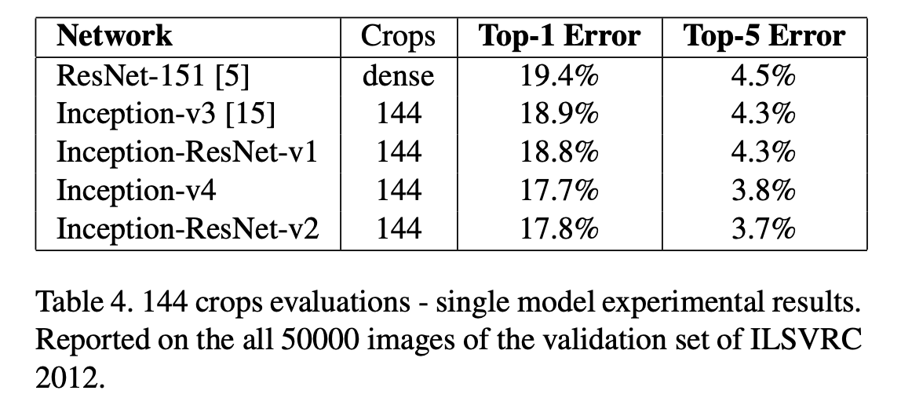
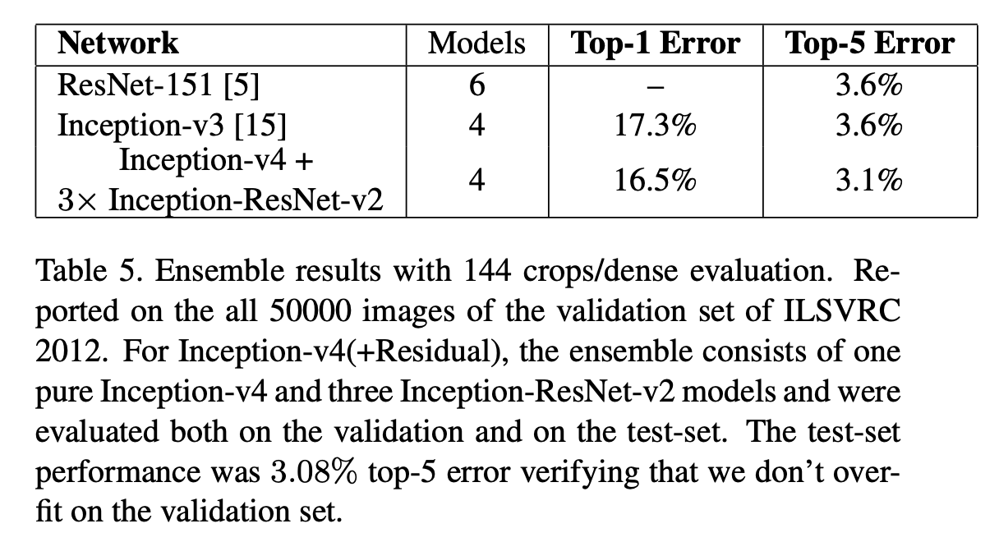
8. Conclusions
- 실험 결과에서 보았듯이, Residual connection은 현격하게 학습 속도를 높여줄 수는 있지만, Residual connection의 여부와 상관없이 성능은 결국 Model size의 문제(virtue of the increased model size)라고 결론을 내립니다.
- 여기까지, Inception 시리즈 리뷰를 마치도록 하겠습니다.
아 괴로웠다다음 편에서는 이 ResNet을 쓸 수 있는대로 쓰는듯한 느낌의 DenseNet을 리뷰해보도록 하겠습니다. :) 감사합니다.
References
- Inception v4 paper